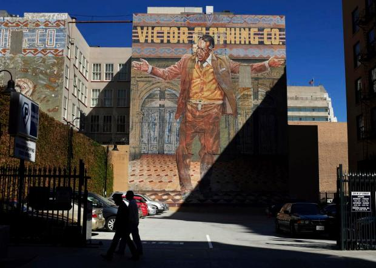
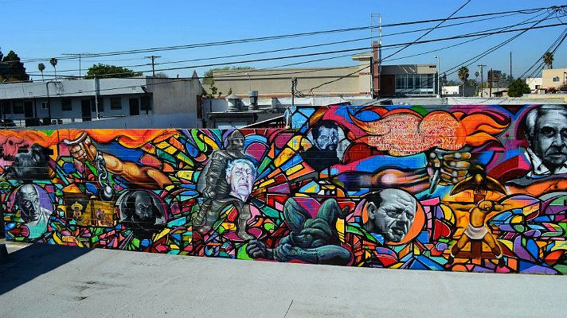
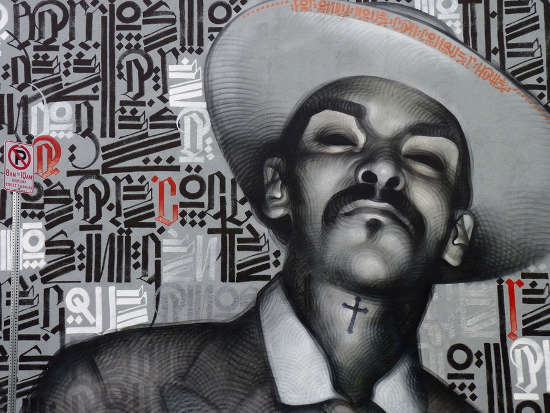
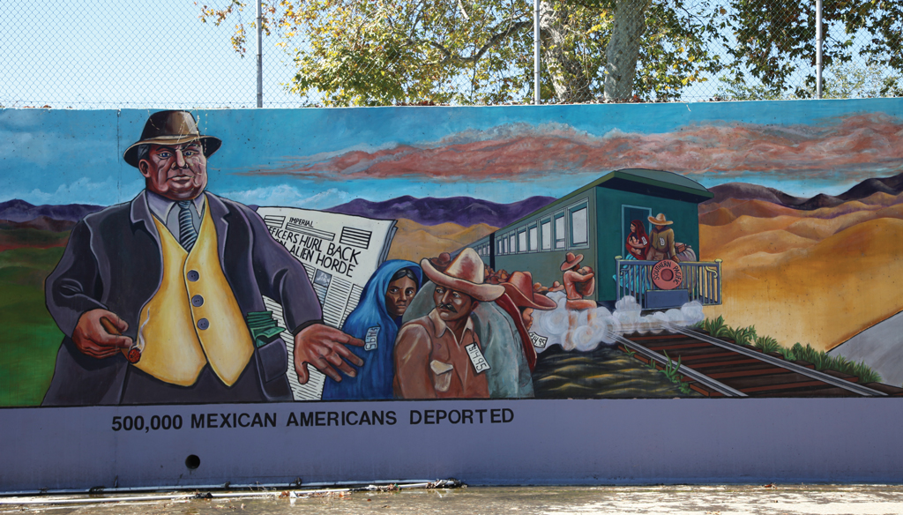

Latinx Murals: Crossing Cultural Boundaries Through Public Art
Welcome to some of our favorite Latinx Mural Art
Welcome To Our Final Project
We Have Curated Some of the Best Street Art We Could Find
Latinx Mural Art May, 28, 2019

Pope of Broadway
A 70-ft tall mural depicting mexican-born actor Anthony Quinn.

Siqueiros: La Voz de la Gente!
A 2012 mural paying homeage to the great David Alfaro Siqueiros. Painted for Latino Heritage month, it was organized by Anna Siqueiros the great grand-niece who gathered famed muralists and grafitti artists such as Ernesto de la Loza, Willie Herrón III, Carlos Callejo, Carlos Duran, Juan Carlos Muñoz, Fabian Debora, Raul Gonzalez, Nuke, Defer, Blossom and more.

The Knight
Depicting a racially ambigious man with Spanish and English text it is a 2009 mural created to promote peace and harmony as a response to gangs.

The Great Wall of Los Angeles
The Great Wall depicts the history of Los Angeles from prehistoric times up until 1950. In this powerful panel the great depression era deportation of 500,000 mexican immigrants that has now been classified as an ethnic cleansing is shown.